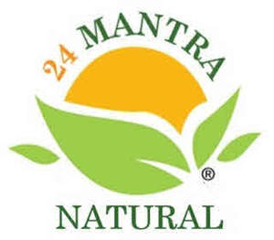

Trade Mark Journal No.2026/009 27 February 2026
UK00004339075 11 February 2026 (29,30,31)

24 MANTRA NATURAL
- Class 29
- Nut-based snack foods; Fruit-based snack food; Snack food (Fruit-based -); Potato snack foods; Cheese-based snack foods; Tofu-based snack food; Potato-based snack foods; Vegetable-based snack food; Seaweed-based snack food; Vegetable-based snack foods; Soy-based snack foods; Potato crisps in the form of snack foods; Sweet corn-based snack foods; Fruit- and nut-based snack bars; Potato snacks; Fruit based snack foods; Fruit snacks; Nut and seed-based snack bars; Coconut-based snacks; Tofu-based snacks; Milk-based snacks; Legume-based snacks; Organic nut and seed-based snack bars; Dried fruit-based snacks; Candied fruit snacks; Snacks of edible seaweed; Snack mixes consisting of dehydrated fruit and processed nuts; Snack foods based on nuts; Snack foods based on vegetables; Snack foods based on legumes; Nut-based meal replacement bars; Yogurt drinks; Nut-based food bars; Fruit-based meal replacement bars; Low-fat potato crisps; Yogurt-based beverages; Desserts of yogurt; Yoghurt beverages; Snack mixes consisting of processed fruits and processed nuts; Rice milk; Rice bran oil [for food]; Rice bran oil for food; Rice milk for culinary purposes; Rice milk [milk substitute]; Rice milk for use as a milk substitute; Almond butter; Powdered soya milk; Coconut milk powder; Cashew nut butter; Nut oils; Nut toppings; Powdered nut butters; Nut oils for food; Nut paste spreads; Cashew nuts (Prepared -); Prepared macadamia nuts; Roast nuts; Edible nuts; Shelled nuts; Flavored nuts; Roasted nuts; Flavoured nuts; Candied nuts; Processed betel nuts; Dried nuts; Salted nuts; Seasoned nuts; Spiced nuts; Mixtures of fruit and nuts; Prepared pine nuts; Butter made of nuts; Ground nuts; Blanched nuts; Processed tiger nuts; Processed nuts; Prepared nuts; Nuts, prepared; Walnut kernels; Peanut butter; Pastes made from nuts; Seed butters; Maize oil; Corn oil; Canola oil; Grapeseed oil; Olive oil; Coconut oil; Soybean oil; Sesame oil; Groundnut oil; Grapeseed oil for food; Cooking oil; Edible oil; Linseed oil for food; Olive oil for food; Olive oil [for food]; Chilli oil; Rapeseed oil for food; Soybean oil for cooking; Sunflower oil for food; Salad oil; Coconut oil for food; Flaxseed oil for food; Palm oil for food; Sesame oil for food; Extra-virgin olive oil; Almond oil for food; Vegetable oil for food; Peanut oil [for food]; Peanut oil for food; Refried beans; Dried beans; Chilli beans; Beans; Dried lentils; Lentils; Cooked beans; Hummus chick pea paste; Dried okra; Baked beans; Spiced oils; Spicy pickles; Cocoa butter; Honey butter; Coconut oil and fat [for food]; Powdered milk; Ghee; Coconut milk; Coconut powder; Curd; Coconut flakes; Coconut, desiccated; Processed coconut; Soya bean curd; Candied fruit; Fruit pectin; Dried fruit; Fruit peel; Fruit pulps; Fruit chips; Crystallised Fruit; Crystallized fruit; Fruit Powders; Candied fruits; Jellies, jams, compotes, fruit and vegetable spreads; Dried fruit products; Coffee creamer; Coffee creamers; Bombay mix; Crisps; Potato crisps; Vegetable crisps; Potato chips; Soya chips; Apple chips; Banana chips; Vegetable chips; Kale chips; Potato fries; Vegetable-based chips; Coconut chips; Soy chips; Canned beans; Dried soya beans; Processed beans; Broad beans; Processed legumes.
- Class 30
- Cereal-based snack food; Snack food (Cereal-based -); Cereal-based snack bars; Corn-based snack foods; Rice-based snack food; Snack food (Rice-based -); Rice-based snack foods; Cereal snacks; Wheat-based snack foods; Grain-based snack foods; Multigrain-based snack foods; Cereal snack foods flavoured with cheese; Cereal based snack foods; Crispbread snacks; Snack foods made from cereals; Snack foods made from corn; Snack foods made from wheat; Snack foods made of wheat; Tortilla snacks; Snack foods prepared from maize; Cereal based prepared snack foods; Snack foods prepared from potato flour; Snack food products made from cereal starch; Cereal-based savoury snacks; Snack food products made from cereals; Snack food products made from cereal flour; Ready to eat savory snack foods made from maize meal formed by extrusion; Corn-based savoury snacks; Rice snacks; Snack food products made from rice; Fruit cake snacks; Snack food products made from rusk flour; Snack products made of cereals; Snack foods made from corn and in the form of puffs; Snack food products made from potato flour; Snack foods made of whole wheat; Cereal breakfast foods; Snacks manufactured from muesli; Rice cake snacks; Snacks made from muesli; Snack foods consisting principally of bread; Cereal based snacks; Snack food products consisting of cereal products; Snack food products made from rice flour; Snack food products made from soya flour; Snack foods consisting principally of pasta; Snack foods consisting principally of confectionery; Snack foods made from corn and in the form of rings; Snack food products made from maize flour; Snack foods consisting principally of rice; Extruded corn snacks; Snacks manufactured from cereals; Cheese curls [snacks]; Cheese balls [snacks]; Extruded wheat snacks; Puffed corn snacks; High-protein cereal bars; Snack bars containing a mixture of grains, nuts and dried fruit [confectionery]; Cheese flavored puffed corn snacks; Snack foods consisting principally of extruded cereals; Snack foods consisting principally of grain; Maize based snack products; Flour based savory snacks; Muesli desserts; Chocolate-based ready-to-eat food bars; Cereal-based meal replacement bars; Oat meal; Chocolate beverages; Puffed cheese balls [corn snacks]; Flavourings of tea for food or beverages; Meal; Sweets (candy), candy bars and chewing gum; Chocolate-based meal replacement bars; Oat-based food; Chocolate drink preparations flavoured with banana; Breakfast cereals; Sugar candy [for food]; Sweets [candy]; Bean meal; Drinks prepared from chocolate; Sugar-free sweets; Breakfast cereals containing fruit; Sugarless sweets; Sugarfree sweets; Breakfast cereals flavoured with honey; Tea beverages; Chocolate sweets; Chocolate flavoured beverages; Coffee beverages; Chocolate beverages with milk; Rice; Rice tapioca; Rice noodles; Rice vermicelli; Rice porridge; Glutinous rice; Rice pasta; Flour of rice; Rice flour; Rice dumplings; Rice pudding; Stir-fried rice; Rice flour porridge; Cooked rice; Fried rice; Glutinous rice flour; Brown rice; Steamed rice; Rice salad; Husked rice; Rice puddings; Rice cakes; Cakes (Rice -); Wholemeal rice; Rice biscuits; Rice crackers; Sauces for rice; Rice starch flour; Creamed rice; Rice crisps; Puffed rice; Rice chips; Rice crusts; Flour for making dumplings of glutinous rice; Onigiri [rice balls]; Onigiri (rice balls); Enriched rice [uncooked]; Roasted brown rice tea; Rice sticks; Chinese rice noodles (bifun, uncooked); Artificial rice [uncooked]; Rice mixes; Enriched rice; Prepared rice; Edible rice paper; Kheer mix (rice pudding); Instant rice; Chocolate-coated rice cakes; Rice based dishes; Foodstuffs made of rice; Prepared rice dishes; Pellet-shaped rice crackers (arare); Glutinous pounded rice cake coated with bean powder (injeolmi); Natural rice flakes; Rice glue balls; Wild rice [prepared]; Maize flour; Barley flour [for food]; Barley flour for food; Breakfast cereals made of rice; Corn flour [for food]; Sweet pounded rice cakes (mochi-gashi); Tapioca flour [for food]; Corn flour; Corn starch flour; Candied cakes of popped rice; Soba noodles [japanese noodles of buckwheat, uncooked]; Buckwheat noodles; Wheat flour [for food]; Starch noodles; Freeze-dried dishes with main ingredient being rice; Freeze-dried dishes with the main ingredient being rice; Cereal flour; Cereals; Cereal powders; Cereal bars; Breakfast cereals, porridge and grits; Cereal preparations; Breakfast cereals containing honey; Cereal seeds, processed; Chips [cereal products]; Hot breakfast cereals; Cereal preparations containing oatbran; Ready-to-eat cereals; Breakfast cereals containing fibre; Cereal preparations consisting of bran; Cereal preparations consisting of oatbran; Crisps made of cereals; Cereal based food bars; Cereals for use in making pasta; Oatmeal; Cereal products in bar form; Cornflakes; Cereal cakes for human consumption; Cereal preparations coated with sugar and honey; Muesli; Food mixtures consisting of cereal flakes and dried fruits; Oat porridge; Processed cereals; Cereals, processed; Cereal based energy bars; Foodstuffs made from cereals; Porridge oats; Biscuits for human consumption made from cereals; Muesli consisting predominantly of cereals; Foods produced from baked cereals; Crackers made of prepared cereals; Oat-based foods; Processed cereals for food for human consumption; Oat flakes; Flour; Dough flour; Wheat flour; Buckwheat flour; Tapioca flour; Flour of oats; Almond flour; Flour of millet; Rye flour; Flour of barley; Chickpea flour; Wheaten flour; Wheat starch flour; Flour for baking; Flour of corn; Soya flour; Potato flour; Cake flour; Vegetable flour; Flour confectionery; Flour for doughnuts; Lentil flour; Truffle flour; Bean flour; Flour for food; Edible flour; Buckwheat flour [for food]; Buckwheat flour for food; Pizza flour; Flour mixes; Tapioca flour for food; Toasted grain flour; Coixseed flour; Flour mixtures for use in baking; Potato flour confectionery; Soya flour for food; Chinese batter flour; Potato flour for food; Potato flour [for food]; Oilseed flour for food; Mixed flour for food; Flour ready for baking; Pulse flour for food; Flour preparations for food; Dried sugared cakes of rice flour (rakugan); Flour based chips; Cornflour; Mung bean flour; Cornmeal; Semolina; Fava bean flour; Non-medicated flour confectionery containing chocolate; Nut flours; Non-medicated flour confectionery coated with imitation chocolate; Prepared savory foodstuffs made from potato flour; Wholemeal bread; Wholemeal bread mixes; Semolina pudding; Bread doughs; Couscous [semolina]; Powdered starch syrup [for food]; Wholemeal pasta; Uncooked dried pieces of wheat gluten; Powdered sugar; Malted bread mix; Corn bread mix; Wholemeal noodles; Buckwheat pasta; Wheat (Flakes of -); Yeast powder; Cake dough; Processed semolina; Sugar almonds; Malted wheat; Rye bread; Granulated sugar; Rolled oats and wheat; Bread crumbs; Malt bread; Nut confectionery; Chocolate-coated nuts; Chocolate coated nuts; Coated nuts [confectionery]; Peanut brittle; Sauces containing nuts; Peanut butter confectionery chips; Cracked wheat; Pounded wheat; Husked barley; Barley flakes; Pearled barley; Corn, milled; Maize flakes; Corn flakes; Maize, milled; Pearl barley; Toasted corn kernels; Flaked corn; Corn meal; Extruded food products made of wheat; Roasted corn; Maize, roasted; Jelly beans; Vermicelli [noodles]; Dried noodles; Vermicelli; Lentil pasta; Cinnamon [spice]; Cardamom [spice]; Pepper spice; Ginger [spice]; Cloves [spice]; Curry [spice]; Nutmegs [spice]; Sumac [spice]; Spice mixes; Curry spice mixes; Cinnamon powder [spice]; Spice rubs; Clove powder [spice]; Pepper powder [spice]; Spice extracts; Curry powder [spice]; Spice preparations; Ginger [powdered spice]; Mustard powder [spice]; Spices; Hot pepper powder [spice]; Mixed spice powder; Processed ginseng used as a herb, spice or flavoring; Curry spices; Japanese pepper powder spice (sansho powder); Baking spices; Mixed spices; Edible spices; Bread flavoured with spices; Japanese horseradish powder spice (wasabi powder); Crackers flavoured with spices; Pizza spices; Chili oil for use as a seasoning or condiment; Helichrysum [spices]; Saffron for use as a seasoning; Saffron [seasoning]; Spiced salt; Turmeric for use as a condiment; Vanilla [flavoring] [flavouring]; Vanilla [flavoring] flavouring; Marinades containing spices; Curry [seasoning]; Ginger puree [condiment]; Chili pepper paste being condiment; Saffron salt for seasoning food; Chili seasonings; Turmeric powders for use as a condiment; Chili seasoning; Flavorings and seasonings; Allspice; Flavourings and seasonings; Nutmeg; Spices in the form of powders; Vanilla flavorings; Ginger paste [seasoning]; Salts, seasonings, flavourings and condiments; Peppers [seasonings]; Chili pepper pastes being condiments; Spicy sauces; Dried coriander for use as seasoning; Sumac for use as a seasoning; Blends of seasonings; Pepper sauces; Dried chili peppers seasoning; Seasoning mixes for stews; Cinnamon; Coffee flavorings [flavourings]; Chili oils being condiments; Caraway seeds for use as a seasoning; Tamarind [condiment]; Stew seasoning mixes; Dry seasoning mixes for stews; Savory sauces used as condiments; Chili paste for use as a seasoning; Dried coriander seeds for use as seasoning; Cumin powder; Seasonings; Seasoning mixes; Salt for flavouring food; Herb sauces; Pickled ginger [condiment]; Curry mixes; Sesame seeds [seasonings]; Sichuan peppers being condiments; Savory sauces; Taco seasonings; Malt extracts used as flavoring; Cranberry sauce [condiment]; Sweet pickle [condiment]; Hot chili pepper sauce; Harissa [condiment]; Food seasonings; Flavoring syrup; Pepper vinegar; Pepper; Curry sauces; Chutneys [condiment]; Taco seasoning; Crackers flavoured with herbs; Poppy seeds for use as a seasoning; Savory pancake mixes; Sugar; Icing sugar; Sugar confectionery; Fruit sugar; Brown sugar; Castor sugar; Liquid sugar; Palm sugar; Grape sugar; White sugar; Boiled sugar; Sugar, honey, treacle; Raw sugar; Sugar substitutes; Cube sugar; Boiled sugar confectionery; Sugars; Sugar candies (Non-medicated -); Flavoured sugar confectionery; Confectionery made of sugar; Crystallized sugar for decorating food; Non-medicated sugar confectionery; Sugar confectionery (Non-medicated -); Crystal sugar [not confectionery]; Crystallized rock sugar; Bonbons made of sugar; Syrup of molasses for food; Molasses syrup for food; Agave syrup [natural sweetener]; Molasses syrup; Cocoa [roasted, powdered, granulated, or in drinks]; Foodstuffs made of sugar for making a dessert; Maple syrup; Syrup for food; Molasses for food; Sago palm starch [for food]; Sugared almonds; Sago; Papads; Turmeric; Chutney; Starch vermicelli; Rice puddings containing sultanas and nutmeg; Edible turmeric; Turmeric for food; Aniseeds for use as a seasoning; Tapioca; Coconut macaroons; Coffee [roasted, powdered, granulated, or in drinks]; Pizza; Pizzas; Pizza sauces; Gluten-free pizza; Pizza mixes; Pizza dough mix; Breadsticks; Pasta; Truffle pasta; Nachos; Preparations for making pizza bases; Taco chips; Naan bread; Pasta dishes; Pita bread; Burritos; Vegetable pies; Chickpea pasta; Coffee; Coffee beans; Coffee bags; Ground coffee beans; Coffee substitutes; Coffee essences; Coffee mixtures; Coffee based beverages; Coffee, teas and cocoa and substitutes therefor; Chai tea; Tea; Samosas; Darjeeling tea; Curry powder; Black tea [English tea]; Papadums; Earl Grey tea; Curry powders; Popadoms; French toast; Poppadoms; Biscuit rusk; Chinese noodles; Wholewheat crisps; Salty biscuits; Savoury biscuits; Salted biscuits; Biscuits; Tortilla chips; Pita chips; Onion biscuits; Bread biscuits; Chocolate flavourings; Wafers [biscuits]; Savory biscuits; Dried cumin seeds; Roasted and ground sesame seeds for use as a seasoning; Paprika; Ground coriander; Coriander, dried; Dried coriander; Garlic powder; Garlic puree; Sichuan pepper powder; Powdered garlic; Table salt mixed with sesame seeds; Helichrysum (spices); Minced garlic; Red pepper powder (Gochutgaru); Chili powder; Ground pepper; Celery salt; Peppercorns; Bread flavored with spices; Cilantro, dried; Ground ginger; Chili powders; Aniseed; Cloves; Sage [seasoning]; Mustard; Herbal teas; Non-medicinal herbal tea; Herb tea [infusions]; Tea extracts; Rosemary tea; Herbal infusions [other than for medicinal use]; Aromatic teas [other than for medicinal use]; Basil, dried; Fruit flavoured tea [other than medicinal]; Dried herbs; Herbal tea; Herb teas, other than for medicinal use; Non-medicinal herbal infusions; Herbal teas, other than for medicinal use; Kelp tea; Saffron.
- Class 31
- Unprocessed rice; Rice, unprocessed; Cereal grains (Unprocessed -); Grains [cereals]; Cereal seeds, unprocessed; Unprocessed cereal seeds; Unprocessed cereals; Cereals (Unprocessed -); Wheat bran; Wheat; Raw nut kernels; Kola nuts; Fresh cashew nuts; Cola nuts; Fresh pistachio nuts; Nuts [fruits]; Raw nuts; Unprocessed nuts; Edible nuts [unprocessed]; Coconut shell; Rye; Maize; Unprocessed sorghum; Grains [seeds]; Unprocessed grain; Unprocessed foxtail millet; Raw corn; Unprocessed beans; Raw red beans; Sugar cane; Unprocessed sugar beets; Raw sugar cane bagasses; Unprocessed sugar crops; Chillies; Chillies (Unprocessed -); Sugarcane; Beet; Dried plants.
Mr PALVESH Patel
Mrs Rekha Palvesh Patel